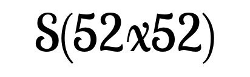

YOLO - You only look once 10647 times
An enlightening look behind the scenes of YOLO state-of-the-art object detection approach and what the once actually means.
Figure 1
A simplified schematic of the Yolo network architecture.



Figure 2
Select grid size and image to be visualized. The YOLO architecture has 3 different pathways for recognizing objects of different sizes. The recognition heads are located in 2d grids of different resolutions. Each grid element can detect underlying objects based of 3 possible anchor box shapes. Each anchor box refines estimates the x- and y-position, the width and the height, a confidence value and a probability vector of each class used for training. However, most grid cells have a low confidence value, i.e. there is no underlying object. By hovering over the figure, the respective grid cell is visualized and the detected bounding box of the most certain anchor box. The bounding boxes are labeled with the predicted class, the certainty value and an index describing which anchor box was used. Bounding boxes with a high certainty are colored green.
Figure 3
Select grid size and image to be visualized. By shifting the actual image below the grid cells, it can be visualized how the confidences of the grid cells (green means high confidence) are shifted and neighboring cells get activated for detecting a shifted object.
Height
Width
Layer 75
Layer 105
Figure 4
Averaged receptive field visualization of convolutional layer 75 (3. last layer of the backbone network) and convolutional layer 105 (5. last layer of the YOLO head) by our Detection Grad Cam algorithm. Our adapted Grad Cam can visualize the receptive field of single neurons. We calculate this visualization by averaging 15 images per grid cell. We choose images where a person is below the corresponding large 13x13 grid cell (and the grid cell whould get the training signal). It shows, that the receptive area is below the corresponding grid-cell's position. And as it is the case for classification CNNS, the receptive fields of layer 105 is smaller compared to the earlier layer 75. The figure depicts further, that the width-neuron has a rather wider receptive field, while the height neuron has a rather vertical receptive field i.e. the detection is more sensitive to these areas.